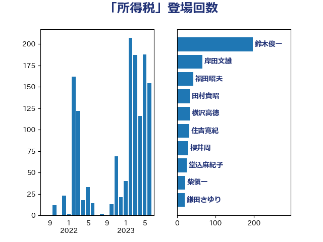

単語「所得税」

| 鈴木俊一 | 自由民主党 | 197 回 |
| 岸田文雄 | 自由民主党 | 66 回 |
| 福田昭夫 | 立憲民主党 | 43 回 |
| 田村貴昭 | 日本共産党 | 33 回 |
| 横沢高徳 | 立憲民主党 | 33 回 |
| 住吉寛紀 | 日本維新の会 | 32 回 |
| 櫻井周 | 立憲民主党 | 30 回 |
| 堂込麻紀子 | 無所属 | 25 回 |
| 柴愼一 | 立憲民主党 | 21 回 |
| 鎌田さゆり | 立憲民主党 | 20 回 |
| 階猛 | 立憲民主党 | 19 回 |
| 上田勇 | 公明党 | 19 回 |
| 西田昌司 | 自由民主党 | 16 回 |
| 梅村聡 | 日本維新の会 | 15 回 |
| 井上貴博 | 自由民主党 | 15 回 |
| 道下大樹 | 立憲民主党 | 14 回 |
| 浅田均 | 日本維新の会 | 14 回 |
| 井上哲士 | 日本共産党 | 14 回 |
| 豊田俊郎 | 自由民主党 | 13 回 |
| 米山隆一 | 立憲民主党 | 13 回 |
| 酒井庸行 | 自由民主党 | 12 回 |
| 渡辺博道 | 自由民主党 | 12 回 |
| 小池晃 | 日本共産党 | 12 回 |
| 塚田一郎 | 自由民主党 | 12 回 |
| 柳ヶ瀬裕文 | 日本維新の会 | 11 回 |
| 前原誠司 | 国民民主党 | 11 回 |
| 野田佳彦 | 立憲民主党 | 10 回 |
| 石垣のりこ | 立憲民主党 | 10 回 |
| 三木圭恵 | 日本維新の会 | 10 回 |
| 岸真紀子 | 立憲民主党 | 9 回 |
| 山口俊一 | 自由民主党 | 9 回 |
| 青柳仁士 | 日本維新の会 | 8 回 |
| 鈴木隼人 | 自由民主党 | 8 回 |
| 足立康史 | 日本維新の会 | 8 回 |
| 細田博之 | 自由民主党 | 8 回 |
| 玉木雄一郎 | 国民民主党 | 8 回 |
| 泉健太 | 立憲民主党 | 8 回 |
| 梅村みずほ | 日本維新の会 | 8 回 |
| 秋野公造 | 公明党 | 7 回 |
| 佐藤啓 | 自由民主党 | 7 回 |
| 馬場雄基 | 立憲民主党 | 6 回 |
| 重徳和彦 | 立憲民主党 | 6 回 |
| 浜田聡 | NHK党 | 6 回 |
| 沢田良 | 日本維新の会 | 6 回 |
| 大塚耕平 | 国民民主党 | 6 回 |
| 金子恭之 | 自由民主党 | 5 回 |
| 金子俊平 | 自由民主党 | 5 回 |
| 熊谷裕人 | 立憲民主党 | 5 回 |
| 江田憲司 | 立憲民主党 | 5 回 |
| 末松義規 | 立憲民主党 | 5 回 |
| 岬麻紀 | 日本維新の会 | 5 回 |
| 岡本あき子 | 立憲民主党 | 5 回 |
| 宮本徹 | 日本共産党 | 5 回 |
| 井林辰憲 | 自由民主党 | 5 回 |
| 馬場伸幸 | 日本維新の会 | 4 回 |
| 藤岡隆雄 | 立憲民主党 | 4 回 |
| 緒方林太郎 | 無所属 | 4 回 |
| 稲津久 | 公明党 | 4 回 |
| 稲富修二 | 立憲民主党 | 4 回 |
| 渡辺周 | 立憲民主党 | 4 回 |
| 浅野哲 | 国民民主党 | 4 回 |
| 早坂敦 | 日本維新の会 | 4 回 |
| 広瀬めぐみ | 自由民主党 | 4 回 |
| 岩渕友 | 日本共産党 | 4 回 |
| 土田慎 | 自由民主党 | 4 回 |
| 吉川元 | 立憲民主党 | 4 回 |
| 加藤勝信 | 自由民主党 | 4 回 |
| 井坂信彦 | 立憲民主党 | 4 回 |
| 藤巻健太 | 日本維新の会 | 3 回 |
| 若松謙維 | 公明党 | 3 回 |
| 玄葉光一郎 | 立憲民主党 | 3 回 |
| 牧山ひろえ | 立憲民主党 | 3 回 |
| 浜地雅一 | 公明党 | 3 回 |
| 浅尾慶一郎 | 自由民主党 | 3 回 |
| 枝野幸男 | 立憲民主党 | 3 回 |
| 村田享子 | 立憲民主党 | 3 回 |
| 斎藤アレックス | 国民民主党 | 3 回 |
| 岡本三成 | 公明党 | 3 回 |
| 山添拓 | 日本共産党 | 3 回 |
| 小沢雅仁 | 立憲民主党 | 3 回 |
| 守島正 | 日本維新の会 | 3 回 |
| 古賀之士 | 立憲民主党 | 3 回 |
| 伴野豊 | 立憲民主党 | 3 回 |
| 伊藤孝恵 | 国民民主党 | 3 回 |
| 中川貴元 | 自由民主党 | 3 回 |
| 一谷勇一郎 | 日本維新の会 | 3 回 |
| 音喜多駿 | 日本維新の会 | 2 回 |
| 鈴木義弘 | 国民民主党 | 2 回 |
| 鈴木庸介 | 立憲民主党 | 2 回 |
| 野間健 | 立憲民主党 | 2 回 |
| 藤原崇 | 自由民主党 | 2 回 |
| 篠原豪 | 立憲民主党 | 2 回 |
| 神谷宗幣 | 参政党 | 2 回 |
| 石川香織 | 立憲民主党 | 2 回 |
| 石井拓 | 自由民主党 | 2 回 |
| 石井啓一 | 公明党 | 2 回 |
| 田名部匡代 | 立憲民主党 | 2 回 |
| 牧野たかお | 自由民主党 | 2 回 |
| 河西宏一 | 公明党 | 2 回 |
| 永岡桂子 | 自由民主党 | 2 回 |
| 松本剛明 | 自由民主党 | 2 回 |
| 杉久武 | 公明党 | 2 回 |
| 志位和夫 | 日本共産党 | 2 回 |
| 徳永久志 | 無所属 | 2 回 |
| 山田美樹 | 自由民主党 | 2 回 |
| 山東昭子 | 自由民主党 | 2 回 |
| 山本博司 | 公明党 | 2 回 |
| 山崎正恭 | 公明党 | 2 回 |
| 山下雄平 | 自由民主党 | 2 回 |
| 尾辻秀久 | 無所属 | 2 回 |
| 尾身朝子 | 自由民主党 | 2 回 |
| 宮崎勝 | 公明党 | 2 回 |
| 大島九州男 | れいわ新選組 | 2 回 |
| 塩村あやか | 立憲民主党 | 2 回 |
| 和田有一朗 | 日本維新の会 | 2 回 |
| 北村経夫 | 自由民主党 | 2 回 |
| 勝部賢志 | 立憲民主党 | 2 回 |
| 伊藤岳 | 日本共産党 | 2 回 |
| 井上英孝 | 日本維新の会 | 2 回 |
| 串田誠一 | 日本維新の会 | 2 回 |
| 中田宏 | 自由民主党 | 2 回 |
| おおつき紅葉 | 立憲民主党 | 2 回 |
| 齋藤健 | 自由民主党 | 1 回 |
| 黄川田仁志 | 自由民主党 | 1 回 |
| 鬼木誠 | 立憲民主党 | 1 回 |
| 高木宏壽 | 自由民主党 | 1 回 |
| 高市早苗 | 自由民主党 | 1 回 |
| 馬淵澄夫 | 立憲民主党 | 1 回 |
| 阿部司 | 日本維新の会 | 1 回 |
| 長妻昭 | 立憲民主党 | 1 回 |
| 長友慎治 | 国民民主党 | 1 回 |
| 鈴木敦 | 国民民主党 | 1 回 |
| 逢坂誠二 | 立憲民主党 | 1 回 |
| 赤木正幸 | 日本維新の会 | 1 回 |
| 赤嶺政賢 | 日本共産党 | 1 回 |
| 西岡秀子 | 国民民主党 | 1 回 |
| 藤田文武 | 日本維新の会 | 1 回 |
| 羽田次郎 | 立憲民主党 | 1 回 |
| 美延映夫 | 日本維新の会 | 1 回 |
| 福岡資麿 | 自由民主党 | 1 回 |
| 福山哲郎 | 立憲民主党 | 1 回 |
| 石原正敬 | 自由民主党 | 1 回 |
| 石井苗子 | 日本維新の会 | 1 回 |
| 石井準一 | 自由民主党 | 1 回 |
| 田畑裕明 | 自由民主党 | 1 回 |
| 田村智子 | 日本共産党 | 1 回 |
| 漆間譲司 | 日本維新の会 | 1 回 |
| 浦野靖人 | 日本維新の会 | 1 回 |
| 櫛渕万里 | れいわ新選組 | 1 回 |
| 森田俊和 | 立憲民主党 | 1 回 |
| 柴田巧 | 日本維新の会 | 1 回 |
| 杉本和巳 | 日本維新の会 | 1 回 |
| 杉尾秀哉 | 立憲民主党 | 1 回 |
| 末次精一 | 立憲民主党 | 1 回 |
| 早稲田ゆき | 立憲民主党 | 1 回 |
| 後藤祐一 | 立憲民主党 | 1 回 |
| 市村浩一郎 | 日本維新の会 | 1 回 |
| 川合孝典 | 国民民主党 | 1 回 |
| 山田勝彦 | 立憲民主党 | 1 回 |
| 宮本岳志 | 日本共産党 | 1 回 |
| 宮崎雅夫 | 自由民主党 | 1 回 |
| 大家敏志 | 自由民主党 | 1 回 |
| 堂故茂 | 自由民主党 | 1 回 |
| 城井崇 | 立憲民主党 | 1 回 |
| 吉良州司 | 無所属 | 1 回 |
| 吉田統彦 | 立憲民主党 | 1 回 |
| 佐々木紀 | 自由民主党 | 1 回 |
| 今枝宗一郎 | 自由民主党 | 1 回 |
| 井原巧 | 自由民主党 | 1 回 |
| 中川正春 | 立憲民主党 | 1 回 |
| 上田清司 | 国民民主党 | 1 回 |